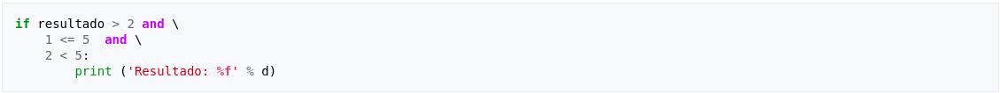
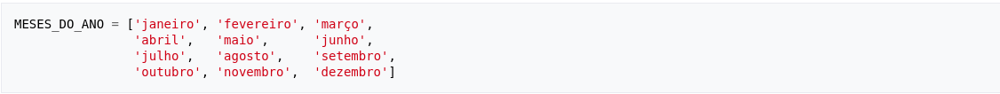

Python
 Python é uma linguagem de programação de alto nível, interpretada,
de script, imperativa, orientada a objetos, funcional, de tipagem
dinâmica e forte. Foi lançada por Guido van Rossum em 1991. Atualmente
possui um modelo de desenvolvimento comunitário, aberto e gerenciado
pela organização sem fins lucrativos Python Software Foundation.
Apesar de várias partes da linguagem possuírem padrões e especificações
formais, a linguagem como um todo não é formalmente especificada.
O padrão de facto é a implementação CPython.
Python é uma linguagem de programação de alto nível, interpretada,
de script, imperativa, orientada a objetos, funcional, de tipagem
dinâmica e forte. Foi lançada por Guido van Rossum em 1991. Atualmente
possui um modelo de desenvolvimento comunitário, aberto e gerenciado
pela organização sem fins lucrativos Python Software Foundation.
Apesar de várias partes da linguagem possuírem padrões e especificações
formais, a linguagem como um todo não é formalmente especificada.
O padrão de facto é a implementação CPython.
A linguagem foi projetada com a filosofia de enfatizar a importância do
esforço do programador sobre o esforço computacional. Prioriza a
legibilidade do código sobre a velocidade ou expressividade. Combina
uma sintaxe concisa e clara com os recursos poderosos de sua biblioteca
padrão e por módulos e frameworks desenvolvidos por terceiros.
Python é uma linguagem de propósito geral de alto nível, multiparadigma,
suporta o paradigma orientado a objetos, imperativo, funcional e procedural.
Possui tipagem dinâmica e uma de suas principais características é permitir
a fácil leitura do código e exigir poucas linhas de código se comparado ao
mesmo programa em outras linguagens. Devido às suas características, ela é
principalmente utilizada para processamento de textos, dados científicos e
criação de CGIs para páginas dinâmicas para a web. Foi considerada pelo
público a 3ª linguagem "mais amada", de acordo com uma pesquisa conduzida
pelo site Stack Overflow em 2018, e está entre as 5 linguagens mais
populares, de acordo com uma pesquisa conduzida pela RedMonk.
O nome Python teve a sua origem no grupo humorístico britânico
Monty Python, criador do programa Monty Python's Flying Circus,
embora muitas pessoas façam associação com o réptil do mesmo nome
(em português, píton ou pitão).
História
O Python foi concebido no final de 1989 por Guido van Rossum
no Instituto de Pesquisa Nacional para Matemática e Ciência da
Computação (CWI), nos Países Baixos, como um sucessor da ABC capaz
de tratar exceções e prover interface com o sistema operacional
Amoeba através de scripts. Também da CWI, a linguagem ABC era mais
produtiva que C, ainda que com o custo do desempenho em tempo de execução.
Mas ela não possuía funcionalidades importantes para a interação com o
sistema operacional, uma necessidade do grupo. Um dos focos primordiais de
Python era aumentar a produtividade do programador.
Python foi feita com base na linguagem ABC, possui parte da sintaxe derivada
do C, compreensão de listas, funções anonimas e função map de Haskell.
Os iteradores são baseados na Icon, tratamentos de exceção e módulos da
Modula-3, expressões regulares de Perl.
Em 1991, Guido publicou o código (nomeado versão 0.9.0) no grupo de discussão
alt.sources. Nessa versão já estavam presentes classes com herança, tratamento
de exceções, funções e os tipos de dado nativos list, dict, str, e assim por
diante. Também estava presente nessa versão um sistema de módulos emprestado
do Modula-3. O modelo de exceções também lembrava muito o do Modula-3, com
a adição da opção else clause.Em 1994 foi formado o principal fórum de
discussão do Python, comp.lang.python, um marco para o crescimento da base de
usuários da linguagem.
A versão 1.0 foi lançada em janeiro de 1994. Novas funcionalidades incluíam
ferramentas para programação funcional como lambda, map, filter e reduce.
A última versão enquanto Guido estava na CWI foi o Python 1.2. Em 1995,
ele continuou o trabalho no CNRI em Reston, Estados Unidos, de onde lançou
diversas versões. Na versão 1.4 a linguagem ganhou parâmetros nomeados
(a capacidade de passar parâmetro pelo nome e não pela posição na lista
de parâmetros) e suporte nativo a números complexos, assim como uma
forma de encapsulamento.
Ainda na CNRI, Guido lançou a iniciativa Computer Programming for
Everybody (CP4E; literalmente, "Programação de Computadores para Todos"),
que visava tornar a programação mais acessível, um projeto financiado pela
DARPA. Atualmente o CP4E encontra-se inativo.
Em 2000, o time de desenvolvimento da linguagem se mudou para a BeOpen
a fim de formar o time PythonLabs. A CNRI pediu que a versão 1.6 fosse
lançada para marcar o fim de desenvolvimento da linguagem naquele local.
O único lançamento na BeOpen foi o Python 2.0, e após o lançamento o grupo
de desenvolvedores da PythonLabs agrupou-se na Digital Creations.
Python 2.0 implementou list comprehension, uma relevante funcionalidade
de linguagens funcionais como SETL e Haskell. A sintaxe da linguagem para
essa construção é bastante similar a de Haskell, exceto pela preferência
do Haskell por caracteres de pontuação e da preferência do python por
palavras reservadas alfabéticas. Essa versão 2.0 também introduziu um sistema
coletor de lixo capaz de identificar e tratar ciclos de referências.
Já o 1.6 incluiu uma licença CNRI substancialmente mais longa que a licença
CWI que estavam usando nas versões anteriores. Entre outras mudanças, essa
licença incluía uma cláusula atestando que a licença era governada pelas leis
da Virgínia. A Free Software Foundation alegou que isso era incompatível com
a GNU GPL. Tanto BeOpen quanto CNRI e FSF negociaram uma mudança na licença
livre do Python que o tornaria compatível com a GPL. Python 1.6.1 é idêntico
ao 1.6.0, exceto por pequenas correções de falhas e uma licença nova,
compatível com a GPL.
Em 2012, foi criado o Raspberry Pi, cujo nome foi baseado na linguagem Python.
Uma das principais linguagens escolhidas é Python. Python influenciou várias
linguagens, algumas delas foram Boo e Cobra, que usa a indentação como definição
de bloco e Go, que se baseia nos princípios de desenvolvimento rápido de Python.
Atualmente, Python é um dos componentes padrão de vários sistemas operacionais,
entre eles estão a maioria das distribuições do Linux, AmigaOS 4, FreeBSD, NetBSD,
OpenBSD e OS X. A linguagem se tornou a padrão no curso de ciências da computação
do MIT em 2009.
Análise léxica
No segundo capítulo do Manual de Referência da Linguagem Python é citado que a
análise léxica é uma análise do interpretador em si, os programas são lidos por
um analisador sintático que divide o código em tokens.
Todo programa é dividido em linhas lógicas que são separadas pelo token NEWLINE ou
NOVA LINHA, as linhas físicas são trechos de código divididos pelo caractere ENTER.
Linhas lógicas não podem ultrapassar linhas físicas com exceção de junção de linhas,
por exemplo:

ou

Para a delimitação de blocos de códigos, os delimitadores são colocados em uma pilha e
diferenciados por sua indentação, iniciando a pilha com valor 0 (zero) e colocando
valores maiores que os anteriores na pilha. Para cada começo de linha, o nível de
indentação é comparado com o valor do topo da pilha. Se o número da linha for igual ao
topo da pilha, a pilha não é alterada. Se o valor for maior, a pilha recebe o nível de
indentação da linha e o nome INDENT (empilhamento). Se o nível de indentação for menor,
então é desempilhado até chegar a um nível de indentação recebendo o nome DEDENT
(desempilhamento). Se não encontrar nenhum valor, é gerado um erro de indentação.
Ferramentas de Desenvolvimento
Atom
Atom é open source e feito pelo Github e com suporte para várias linguagens, dentre
elas o Python. É integrado ao Git e Github, sendo possível mexer com o Git e Github
através da interface do editor de texto. Ótimo para iniciantes.
Visual Studio Code
O VSCode é open source e free, desenvolvido pela Microsoft. Suporta inúmeras linguagens de
programação.
Vim
Tem em todo GNU/Linux e é altamente configurável. Uma forma de transformar o vim em uma IDE
Python completa é seguindo o tutorial em vim a ide para programadores python.
Emacs
Um editor (ou um sistema operacional com capacidades de edição?!) poderoso e amplamente
extensível em eLisp (um dialeto Lisp). Vencida a curva de aprendizado (considerada difícil
por algumas pessoas) é possível torná-lo em uma IDE Python poderosíssima. O python-mode.el
prove diversas funcionalidades para edição, debug e desenvolvimento de programas em Python
e o Ropemacs funcionalidades de refactoring. Mais "Emacs Goodies" na própria Wiki em
PythonComEmacs.
Sublime Text
Editor de texto proprietário e pago, porém disponibiliza uma versão beta para uso sem custo.
Atualmente na versão 3, a compra de sua licensa permite o uso de ambas as versão existentes.
PyCharm community
É desenvolvido pela companhia JetBrains. Esta edição é liberada sob a licença da Apache.
É multiplataforma. Essa IDE fornece análise de código, um depurador gráfico, um testador
de unidade integrado, integração com sistemas de controle de versão (VCSes), e suporta
desenvolvimento de web com Django.
NetBeans
Analogamente ao Eclipse, o NetBeans também oferece suporte ao Python através de plugins.